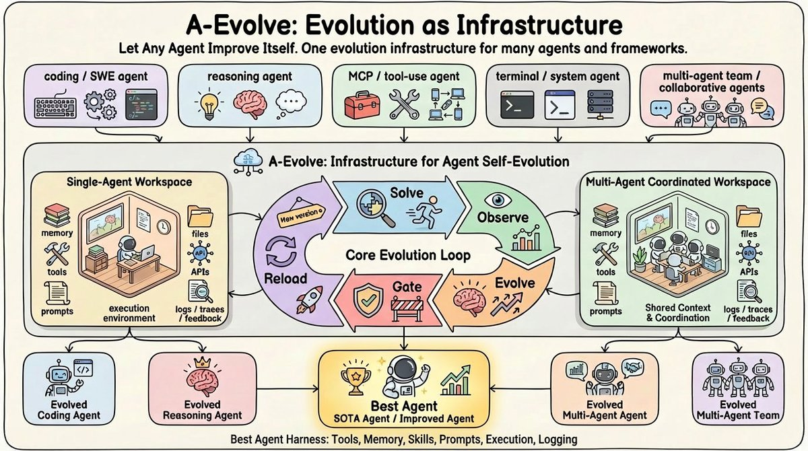
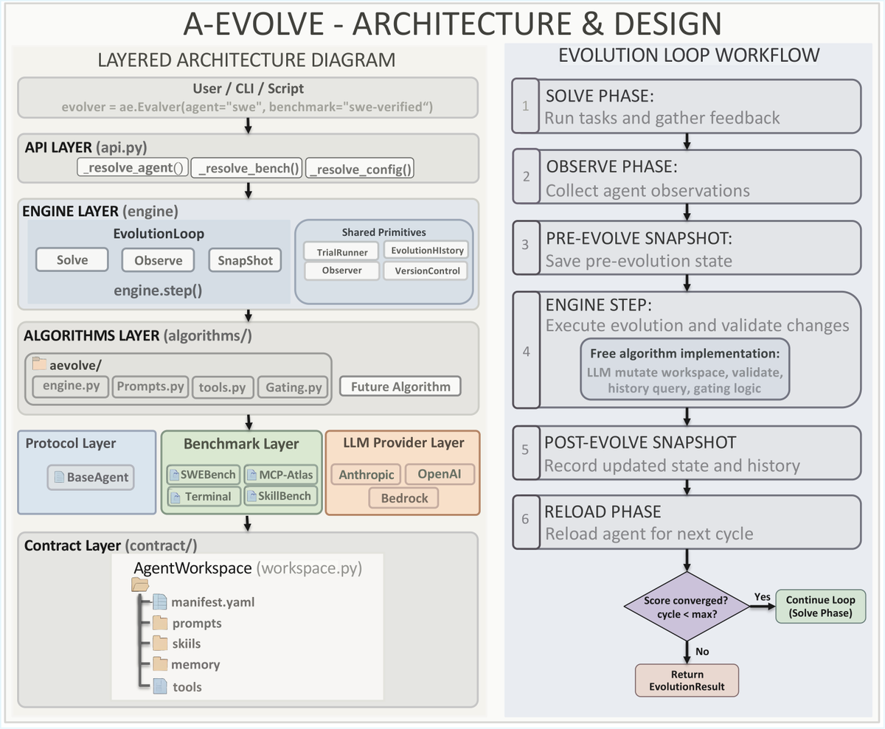

核心判断
A-Evolve 把“agent 能不能持续变好”从一个模糊的自我改进叙事，压成了一个更工程化的问题：哪些状态可以被修改，哪些失败信号可以被观测，哪些更新可以被验证，哪些退化可以回滚。这个抽象成立时，agent 的能力提升不再只依赖模型权重更新，也可以来自外部运行系统的持续重写。

为什么这件事重要
过去很多 agent 改进是手工的：人看失败轨迹，改系统提示，补工具说明，写一条经验，换一个检查清单，再手动跑 benchmark。A-Evolve 把这件事系统化：失败不只是一次坏结果，而是可以被整理成 observation；经验不只是人脑里的直觉，而是写进 workspace 的技能、记忆、prompt fragment 或工具配置；更新不只是一次 prompt tweak，而是带 git tag、可回滚、可比较的 harness mutation。
这解释了为什么作者把它包装成 “PyTorch moment”。这个比喻不应理解为它已经成为 agent 生态的事实标准，而应理解为它试图给 agent evolution 提供一个统一接口：训练框架当年把张量、梯度、模块和优化器标准化；A-Evolve 试图把 agent 的可变外部状态、评测环境和演化算法标准化。
它默认更新 prompts、skills、tools、memory 和 harness 文件。模型参数不变，变化发生在模型外部的执行支架。
README 里把 adaptive_evolve、adaptive_skill、skillforge、guided_synth 都放在同一 contract 下。
系统能否进步，取决于 observation 的质量、任务拆分、holdout 与 evaluator 是否真的代表目标能力。
机制拆解
A-Evolve 的核心 insight 是 “workspace is the interface”。Agent 只负责从文件系统读取状态并 solve task；evolver 只负责读取轨迹和反馈并修改文件；二者不需要共享内部实现。这个边界让任意 agent 框架理论上都可以接入，只要它能把可变状态映射到同一套目录契约。
benchmark 产生任务，agent 根据当前 workspace 中的 prompt、skills、tools、memory 执行，产出 trajectory。这里 agent 可以是 SWE agent、MCP agent、terminal agent，也可以是用户自己的框架。
系统记录 task、trajectory、feedback。MCP-Atlas 路线会分析 claim type、task type、judge feedback、tool error；SWE 路线还会记录 patch、文件修改、solver proposed skill。
evolver LLM 读取 observations 和历史，生成或合并技能，修 prompt，剪 memory，甚至调整 tool registry 或 harness。所有可变项都落到普通文件。
有效更新被 commit 和 tag；退化更新可以回滚。这个机制把“自我改进”拉回软件工程语义：diff、review、score、rollback。
agent 重新加载 workspace 后再跑下一批任务。若新技能能被正确触发并遵守，收益才会进入真实执行轨迹。

四条算法路线其实在回答不同问题
A-Evolve 的“通用”不是因为某个 evolver prompt 万能，而是因为它允许不同演化策略共享同一个 agent workspace 契约。仓库里的四条主算法路线可以看成四种 failure-to-harness-update 的映射方式。
| 路线 | 主要信号 | 写入对象 | 适合场景 | 主要风险 |
|---|---|---|---|---|
adaptive_evolve |
per-claim feedback、task type、judge 失败模式、工具错误 | targeted skills、prompt、memory | MCP-Atlas 这类结构化工具调用任务 | judge feedback 若偏，自动播种技能会把偏差固化 |
adaptive_skill |
trajectory-only 行为信号、LLM judge proxy score | 技能库，通常带 skill budget | Terminal/CLI 这类真实验证慢或标签难取的环境 | 没有真实标签时，proxy judge 可能把“看似努力”当成成功 |
skillforge |
solve-fail-evolve-retry 的同题迭代结果 | general skills 与 task-specific skills | SkillsBench 这类失败可复现、技能可迁移的任务集 | 若信息泄漏控制不好，技能会记住任务答案而非方法 |
guided_synth |
solver 自己提出的技能与极简 episodic memory | curated skills，偏向 merge 而不是无限新增 | SWE-bench Verified 这类长程修 bug 任务 | solver 提案质量决定上限；过窄技能会污染未来任务 |
榜单数字应该怎样读
原帖和 README 都给出 MCP-Atlas、SWE-bench Verified、Terminal-Bench 2.0、SkillsBench 的提升数字。它们说明 A-Evolve 在多个 agent benchmark 上至少形成了可运行的实验路线，但不能直接推出“任意 agent 接入后都会自动成为 SOTA”。这里要拆开三层证据。
分数是 base model、seed workspace、benchmark adapter、evolution algorithm、task split 与 evaluator 的合成结果，不是模型权重能力的单独提升。
后续论文把 harness-updating 和 harness-benefit 分开：会写好更新的模型，不一定是最能从更新中受益的 solver。
技能写进 workspace 只是第一步；agent 是否能在长程任务里发现、调用并遵守这个技能，才决定真实收益。
因此更稳的解读是：A-Evolve 提供了一个把 harness improvement 做成实验工程的框架。它把手工经验变成可比较的 artifacts，但没有消除 benchmark overfitting、reward hacking、judge bias、holdout leakage、环境漂移和技能库膨胀这些老问题。
术语解释
包住模型的外部执行系统，包括系统提示、工具、技能、记忆、验证器、环境、输出契约和 workflow。A-Evolve 主要演化的是这些对象。
一种文件系统契约：manifest.yaml 定义入口，prompts/、skills/、tools/、memory/ 存放可演化状态。
分别指 Bring Your Own Agent、Environment、Algorithm。真正含义是 agent、benchmark 和 evolution engine 通过接口解耦。
agent 解决任务时的执行轨迹，通常包括工具调用、输出、错误、补丁、对话历史和最终答案，是 evolver 诊断失败的原料。
对候选 harness 更新做保留集验证。它不是形式主义；如果没有 gate，evolver 很容易把一次任务的偶然失败写成全局规则。
Evolutionary Generality Loss，用新增技能数相对已解决任务数衡量技能库是否仍在扩张。低 EGL 表示系统不再频繁发现新 failure pattern。
工程上该怎么借鉴
如果把 A-Evolve 当作一个可以直接复制的工程模式，我会优先复制三件事：文件系统契约、可审计更新循环、以及把失败压缩成可复用技能的机制。暂时不应复制的是过度乐观的“全自动自我进化”口径。
明确哪些内容允许 agent/evolver 修改：prompt、skill、memory、tool alias、workflow checklist。越少越容易验证，越多越容易失控。
不要只记录 pass/fail。至少区分 wrong entity、missing requirement、format error、tool misuse、timeout、verification miss。
无限新增技能会稀释注意力。更好的策略是先 merge、再 prune、再根据触发描述做检索或选择。
SWE 路线强调 verification-focused skills 很合理。长程 agent 常失败在“以为修好了”，而不是完全不知道怎么写代码。
agent_workspace/
manifest.yaml
prompts/system.md
skills/*/SKILL.md
tools/registry.yaml
memory/episodic.jsonl
evolution/history.jsonl证据边界与资料索引
本笔记基于目标 X thread、作者公开资料、A-Evolve GitHub README 与仓库源码、官方 quickstart/design 文档、两篇 arXiv 论文页面，以及评论区提到的 harness-improvement 对照文章交叉整理。GitHub REST 匿名接口在核验时触发 rate limit，因此仓库侧主要使用 raw README、页面抽取和只读克隆核验；榜单名次按作者与 README 声称记录，未独立复现实验。